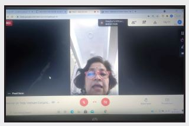

Report
International Webinar on Connect to Reconnect Chapter: IV
India – Vietnam Conjunction
6th May, 2021
4.00- 5.30 PM (IST)
South East Asia has always been an important aspect of Indian foreign policy. Initiation of the“Look East Policy” and the subsequent “Act East Policy” by the present Indian government manifests its keenness towards this region. Comprehending the significance of this newly adopted policy of the Indian government, Institute of Social and Cultural Studies initiated meaningful virtual academic disquisitions under the series titled “Connect to Reconnect” with Ministry of External Affairs (MEA), Branch Secretariat office, Kolkata addressing India’s relationship with Vietnam, an important nation of land South East Asia.
The fourth chapter of the series titled “India – Vietnam Conjunctions” took place on 6th May 2021. Moderated by Ambassador Preeti Saran, Former Secretary(East) Ministry of External Affairs, Government of India and Former Indian Ambassador to Vietnam, the panel included distinguished speakers like H.E. Pranay Verma, Ambassador of India to Vietnam, Dr. Ton Sinh Thanh, Former Ambassador and member of the Diplomatic Academy of Vietnam, Captain (IN) Alok Bansal, Director, India Foundation and Adjunct Professor, New Delhi Institute of Management and Mr. Do Thanh Hai, Councillor Vietnam embassy in India.
The webinar commenced with the introductory note of Kankana Roy of ISCS, who narrated the objective of the present series of the webinar and thereafter requested the moderator Ambassador Ms. Preeti Saran to initiate the academic disquisition.
Ambassador Preeti Saran initiated her introductory note by expressing her gratitude towards the organisers for organising an academic discourse in the form of a webinar on the various aspects of India-Vietnam bilateral relationship. Her initial deliberation centred round the virtual summit of 21st December 2020 which was attended by Indian Prime Minister, Sri Narendra Modi and his counterpart from Vietnam, H.E. Nguyen Xuan Phuc. She explained the significance of the virtual summit and its impact over the growing bilateral relations. Mentioning the issue of the global pandemic that had engulfed the entire world she highlighted how it had adversely affected the Indo-Vietnamese bilateral relationship. However she added that at present both the countries were collaborating with each other to fight against the growing impact of Covid-19. She also hoped that like past both the countries would emerge stronger after such adversity.
Her deliberation thereafter focused on the military and strategic cooperation between the two countries. In her discourse she opined that such cooperation had contributed largely in establishing peace and security in the Indo-Pacific region.
In the due course of her deliberation she highlighted the potentiality of the bilateral trade and economic relations between India and Vietnam which had recently surpassed 10 billion U.S. dollars. She also identified areas like exploration of hydrocarbon sources, renewable energy, agriculture, agro- processing, Information and Technology, Telecom, Automobiles, Textiles and Pharmaceuticals where both the countries could enhance their trade and cooperation initiatives.
She concluded her introductory note by saying that while both the countries were celebrating their 5th year of comprehensive strategic partnership and 50th year of diplomatic relationship, it was necessary that both the countries would work more closely both in regional and international forums. She thereafter requested Mr. Do Thanh Hai to initiate his presentation.
Mr. Do Thanh Hai’s presentation focused on the development of the bilateral relationship between India and Vietnam and the possible way forward of this relation. The distinguished speaker initiated his presentation by highlighting the deep civilizational and cultural linkages both the countries shared since the ancient times, specially mentioning the kingdom of Champa in Vietnam which drew its cultural inspiration from India. He said that this linkage remained through ages and in the modern era the same had grown even stronger. In his deliberation he pointed out how India had been supportive towards Vietnam’s struggle for Independence and Vietnam’s initiative to resolve the Cambodian crisis. He opined that the bilateral relationship between the two countries is based on a strong foundation and pointed out that both the countries had upgraded their relationship into a comprehensive strategic partnership. He said that though bilateral relationship had received a major setback due to the outbreak of the global pandemic yet both the countries shared a strong economic and investment relationship. In the due course of his discussion he also emphasized on the development of tourism and people to people contact between both the countries in the post pandemic scenario.
The distinguished speaker thereafter focused his discourse on the future of the bilateral relationship and mentioned the recent joint vision document signed by the leadership of both the countries, where it was decided that both the countries would cooperate with each other in the field of defence, trade, science, technology and energy. He also opined the necessity of increasing people to people contact that could help the people of both nations understand the civilizational linkages between both the countries. He concluded his deliberation by stating that people of both the countries had very little knowledge about each other and opined that a strong institutional mechanism is needed in this regard.
The next speaker Ambassador Pranay Verma focused his discourse on connectivity which he termed as one of the significant aspects of the bilateral relations. He opined that historically both the countries were well connected and also added that the necessity to take a holistic view on connectivity which incorporated digital, economic, cultural, social and institutional connectivity.
In his deliberation he spoke on the political connectivity between both the countries which gradually boosted through regular exchanges of phone calls between the Prime Ministers of the respective countries, institutional dialogue between the foreign ministers and defence ministers of both the nations. He opined that the joint vision that was published after the virtual summit of 21st December, 2020, rather than a joint statement showed the eagerness of both the nations to establish a robust bilateral relation.
He thereafter focused his discussion on the defence cooperation between India and Vietnam where he highlighted various initiatives taken by both the nations to strengthen their defence cooperation. On the issue of economic and trade relationship he pointed out how Covid-19 forced both the countries to explore new avenues in the field of Business and economic cooperation.

Ambassador Verma during his discourse also touched the issue of cultural cooperation and showed how both the countries were cooperating in the conservation of the shared heritage.
In his presentation he also laid importance over the societal connection between both the countries through a growing Indian diaspora in Vietnam and people to people contact especially through the youths of both the countries.
The last part of his deliberation focused on the issue of digital connectivity where he analysed the importance of initiatives like e-certificate, virtual business etc. He commented that the digital connectivity was a fundamental pillar of an effective bilateral relation. He concluded his presentation by stating that as India- Vietnam was celebrating the 5th year of Comprehensive Strategic partnership and fifty years of diplomatic relation, both the nations must lay emphasis over the above stated issues to build a strong and effective bilateral relationship.
The subsequent speaker of the webinar, Dr. Ton Sinh Thanh focused his discussion on the physical connectivity between India and Vietnam. According to the speaker North East India, located at an equidistance between Indian capital Delhi and Vietnam capital Ho Chi Minh city could emerge as a significant player in developing India-Vietnam physical connectivity. In his discourse he mentioned that the commencement of the direct flight between India and Vietnam had contributed significantly in the development of physical connectivity between the two nations. He also mentioned that in recent past sea connectivity between India and Vietnam had improved significantly leading to a more close maritime connectivity between the two nations. He also emphasised the development of land connectivity and hoped for an extension of the trilateral Asian Highway between India-Myanmar-Thailand up to Vietnam. He also mentioned the possibility of rail connectivity between the two nations in the coming future. He mentioned the importance of digital connectivity which according to him had increased significantly during the pandemic days.
He concluded by mentioning that though favourable conditions remained there for the further development of bilateral relationship between the two countries, yet delay in the implementation of the projects and bureaucratic hurdles remained the major obstacles for a further developed bilateral relation between India and Vietnam in the future.
The last speaker of the webinar Mr. Alok Bansal initiated his discourse by highlighting the 2000 years old civilizational linkages between India and Vietnam. He also opined that though often people thought India- Vietnam relation through the prism of Buddhism, however according to the distinguished speaker there also remained a huge link of Hinduism between the two nations. He added that the temple complex of the Cham kingdom revealed how Hinduism linked India with Vietnam. In his presentation the distinguished speaker stated that even before Vietnam became independent, it had been in regular communication with India and the first Indian Prime Minister Jawahar Lal Nehru had established close relation with the revolutionary leader of Vietnam Ho-Chi Minh. He also analysed how the two countries over few decades had developed their relationships which led India to be the fourth country in the world with whom Vietnam had a comprehensive strategic partnership. The eminent speaker, in his

presentation, also highlighted the decade old defence collaboration between the two countries and how it had progressed and achieved a new height. He emphasised the necessity of an overland connectivity and pointed out the significance of extending the Asian trilateral highway up to Vietnam. He also pointed out that the commencement of direct flight between India and Vietnam would help both the countries. He opined that due to the operation of direct flight tourist inflows from India to Vietnam had increased and in future tourist outflows from Vietnam to India would also increase, resulting in a possibility of more direct people to people contact. He also emphasised the role of the youth in developing people to people contact. The distinguished speaker also addressed the issue of Maritime trade between India and Vietnam and analysed how both the countries were working together to establish the notion of freedom of navigation even in the contested areas of South China Sea. He concluded his presentation pointing out how both the countries were working together in the Indo-Pacific region on blue economy, maritime security and maritime connectivity.

After the deliberation of the distinguished speakers, the moderator of the webinar opened the session for questions and comments from the audience. A number of important questions were raised and were adequately replied by the speakers.
The question and answer session was followed by a vote of thanks which was delivered by Arindam Mukherjee, Director, Institute of Social and Cultural Studies, India, who on behalf of the organisers thanked the Moderator, distinguished speakers for their valuable deliberations.